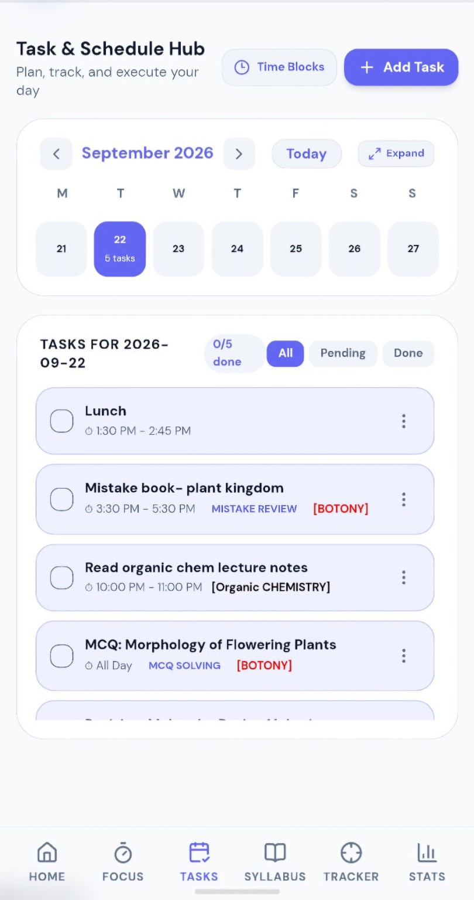
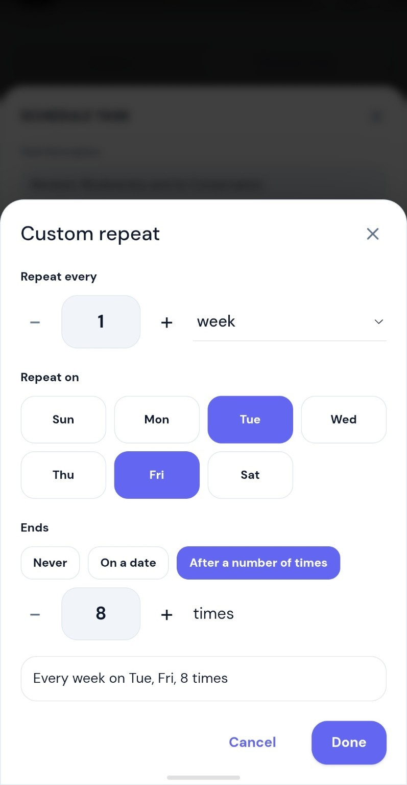
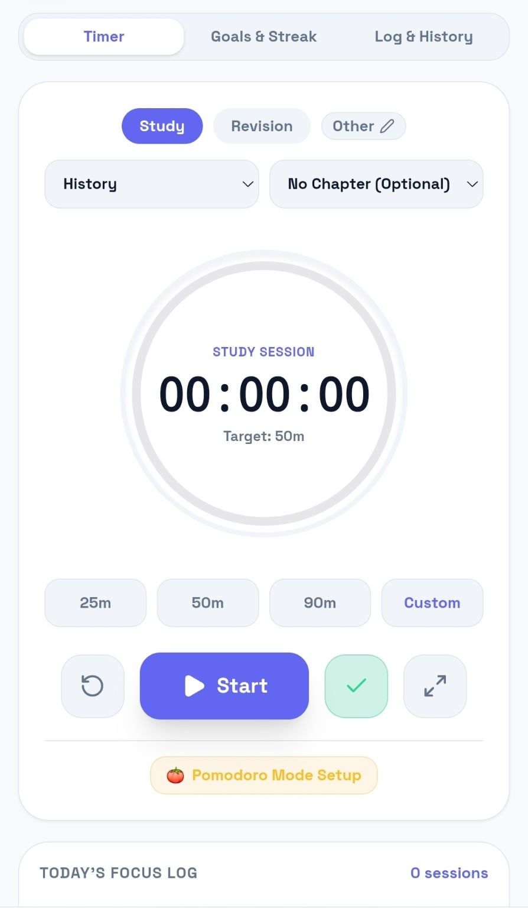
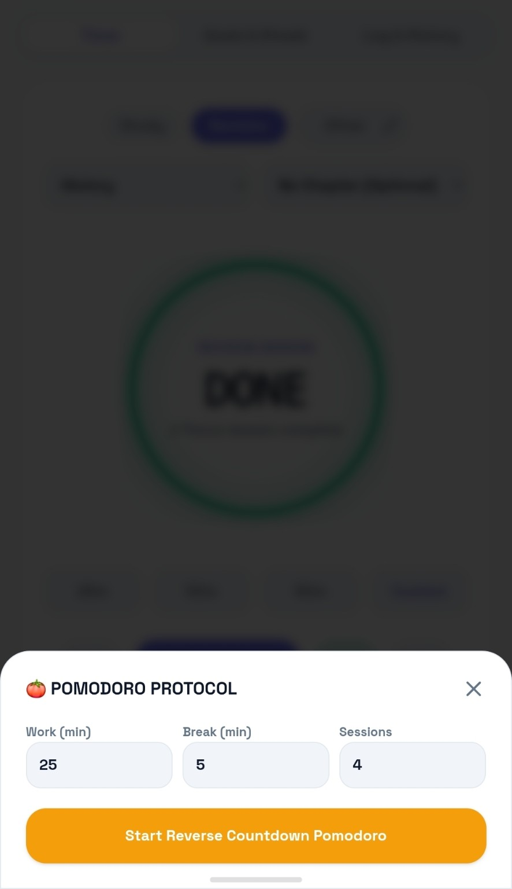
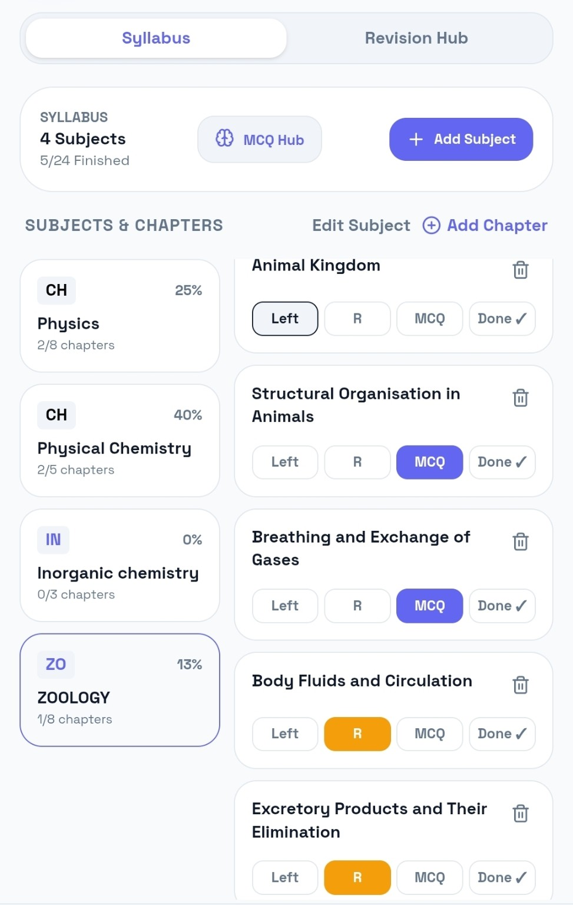
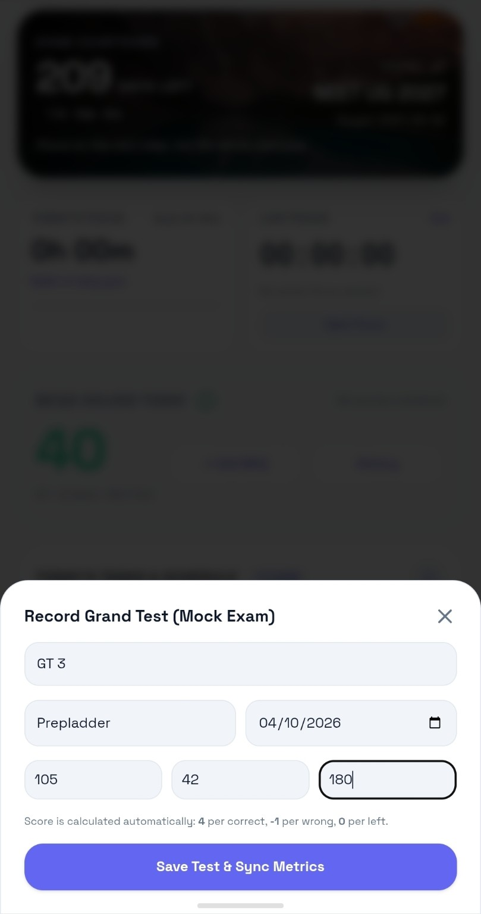

How to use it
Tutorials, with the real interface.
Step-by-step guides using the actual Trackability screens — no invented mockups.

01 / Planning
Add and manage a time block
- Open the Tasks & Schedule area.
- Choose the date and add your task.
- Give it a start/end time or duration.
- Attach subject/chapter context when useful.
- Use repeat/reminder options when the work recurs.


02 / Focus
Start a focused study session
- Choose Study, Revision or Other.
- Select subject/chapter if required.
- Choose 25, 50, 90 minutes or a custom duration.
- Start, pause/resume and finish the session.
- Use Pomodoro when you want work/break cycles.


03 / Study
Build your syllabus and revision flow
- Open Syllabus and select the subject.
- Review chapter completion.
- Mark chapters/topics that need revision.
- Open Revision Hub to collect those topics.
- Add the revision item to Tasks when you're ready to schedule it.

04 / Tests
Log a Grand Test
- Open Grand Tests.
- Enter test name and platform.
- Record total questions, correct, wrong and left.
- Let the configured marking scheme calculate the score.
- Use the history/trend view to compare tests.